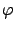

Siguiente: Ancho de la calle
Subir: Cálculo del ángulo de
Anterior: Cálculo del ángulo de
Índice General
Una vez obtenida la cuadra más próxima al móvil, resta calcular el
ángulo que forma ésta con la recta que une a la radiobase con el
móvil a fin de conocer la orientación de la calle. Partiendo de la
base que existen dos posibles valores de ángulos como resultado de
dicha intersección, se toma como criterio elegir el menor de ellos
(representado por  en la figura
10.4) de tal forma que siempre sea menor a 90^&cir#circ;.
SAPO